Team: Shaurya Jain, Carolyn Liu, Lance Mathias, Eric Nguyen
Link to webpage: ericnguyen1213.github.io/sp25-finproj-lets-goooo/
Link to video: video link
Link to slides: slide link
Abstract
From homework 3, we implemented a ray tracing algorithm that assumed light travelled through a vacuum. Therefore, the radiance only changed when a light ray interacted with other surfaces, either by being bounced off or absorbed. However, in reality, light travels through mediums that contain particles which affect how it is absorbed or scattered. This can be implemented with volumetric scattering which builds on top of our ray tracing algorithm and accounts for interactions with particles. In our implementation, we consider two types of interactions: absorption and scattering. Absorption dims the light ray when it interacts with a particle while scattering changes the direction of the light.
Technical Approach
Base Implementation
To implement volumetric scattering, we modify our homework 3 code to allow rays to interact with particles in the medium rather than only bounce off surfaces. At each step, a ray may scatter off a particle with some probability and a new direction is sampled from that point of interaction. Each particle has an absorption coefficient, scattering coefficient, and extinction coefficient. The absorption coefficient determines how much light is absorbed as it travels through the medium. The scattering coefficient describes how much light is redirected. The extinction coefficient represents the total attenuation of light due to absorption and scattering and is equivalent to the sum of both coefficients.
To begin our implementation, we define a struct called Volumetric_Params to represent the medium. This struct includes the three coefficients, a scatter probability, and a hemisphere sampler as its attributes. From there, we start computing the radiance that is emitted from the light ray.
At each bounce of light, we consider the transmittance, which represents the fraction of light that reaches the camera after the ray travels through a medium of dust. This transmittance attenuates the radiance and is computed using the following formula in the research paper: \(T(a \to b) = e^{-\sigma_t \cdot (a \to b)}\)
Additionally, we update our Monte Carlo estimation to account for samples resulting from interactions with either a surface or a particle. The implementation for sampling from a bounce off a surface is the same as homework 3 but we now scale the radiance by the transmittance. For particle interactions, we sample a new ray direction and apply a phase function to determine the probability of scattering in that direction. (We will share more about the specific phase functions we have implemented in the next section.)
We now determine whether a ray intersects with a particle or intersects a surface. We implement this using a few techniques: ray stepping, inverse transform sampling, and delta tracking, which we add as methods to our Volumetric_Params struct. (More will be shared in the next sections.)
Then, at each bounce, we determine whether the ray scatters within the medium (using ray stepping or inverse transform sampling) or intersected with a surface.
To put it all together, we modify at_least_one_bounce method to now call the appropriate function based on the type of interaction. If the ray scatters, we estimate the radiance using the particle interaction method, and if the ray has not scattered but intersected a primitive, we estimate the radiance using the original homework 3 code (scaled by transmittance). This function is then recursively called for the subsequent bounces/scatters and we accumulate the total radiance.
Below are comparisons of rendered images with no volumetric scattering (homework 3) and with volumetric scattering:
|
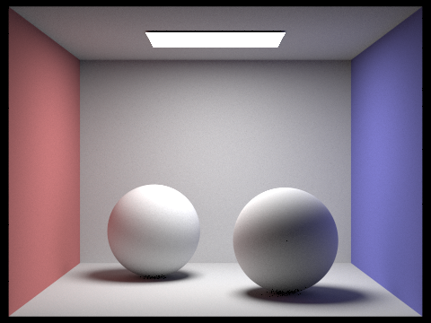
|
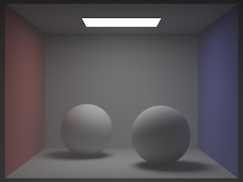
|
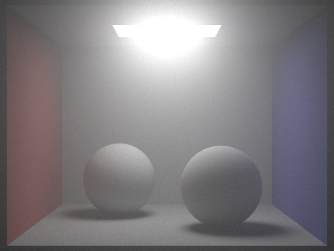
|
From the images, including volumetric scattering makes the images a lot more dim. This is what we expect to see as the light rays are interacting with particles and losing radiance in every bounce. The isotropic image is dim overall due to the uniform sampling of direction and the anisotropic has a lot more light scattering around the light source as we sample from lights.
Ray Stepping (Homogeneous Medium)
In a homogeneous medium, we assume the extinction coefficient is constant throughout the medium. To determine whether a light ray interacts with a particle as it travels, we walk along the ray and sample a random probability at each time step. If this probability is less than \(1 - e^{-\sigma_t}\), this means that an interaction with a particle has occurred. We then define a Scatter_Point struct to store the position and time of interaction. We then use Monte Carlo sampling to estimate the radiance emitted from this scatter point. This idea was simple to implement but computationally expensive as it requires iterating over many steps along the ray before detecting an interaction.
We completed this implementation by following this paper. The issue is that we knew we had to sample a timestep for us to use as a scatter event as opposed to a surface hit event. Before learning about inverse transform sampling for that t value, we proposed an implementation in which we traverse the ray by a given step size and rolling a random number generator to see if the sample could be used as a scatter event. This method was incredibly slow, but looking back on it in retrospect, it did lead to a decent outcome similar to other sampling methods.
Inverse Transform Sampling (Homogeneous Medium)
While staying in our homogeneous medium, we also implemented inverse transform sampling, which samples a possible time of interaction. This method optimizes and removes the bias from our previous idea by avoiding the need to iterate through each time step. The CDF of the exponential distribution we are sample from is \(1 - e^{-\sigma_t * t}\). To sample the interaction time, take the inverse CDF by following this formula from this research paper: \(t = -\frac{ln(1 - \xi)}{\sigma_t}\). If the sampled time is less than the time it takes for the ray to intersect a surface, then an interaction with a particle has occurred. We then continue to sample the radiance at the interaction point using Monte Carlo integration.
Below is a comparison of the rendering times:
|
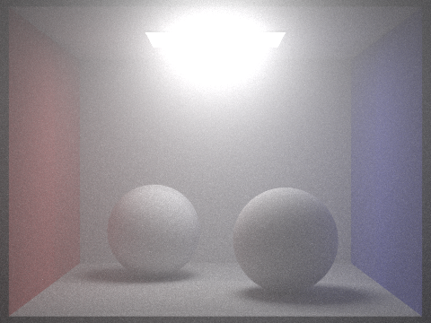
|
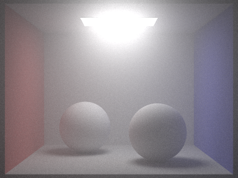
|
It is evident that inverse transform sampling renders faster than ray stepping. Additionally, there is no bias so the overall image has less visual artifacts.
Delta Tracking
Our previous two implementations assumed a homogeneous medium, which is not always the case in real world scenarios. To model heterogeneous mediums, we assume that the extinction coefficient varies as a function of spatial position and we constructed two methods for this that take in a point in space and return the absorption coefficient and scattering coefficient at that position. For example, to simulate a medium which is clear except for a foggy sphere of gas, we increase the scattering coefficient inside the sphere and reduce the scattering coefficient outside of the sphere. A medium with no volumetric scattering means the coefficients are both zero, and a homogeneous space can be represented by having constant coefficients throughout the whole medium.
To simulate scattering through such a medium with a spatially varying extinction coefficient, we implement delta tracking, which is a combination of rejection sampling with our inverse transform sampling from before. The algorithm proceeds as follows:
- Set a proxy constant \(\sigma_{max}\) which is at least as large as the extinction coefficient anywhere in the medium, and sample an intersection point according to the isotropic sampling rule from before using the proxy constant: \(t_{sample} = \frac{ln(1-\xi)}{\sigma_{max}}\)
- Compute the spatial position and corresponding extinction coefficient \(\sigma(x)\) at the point x along the ray corresponding to \(t_{sample}\). Return the point x with probability \(p = \frac{e^{-\sigma(x) \cdot t} \sigma(x)}{\sigma_{max}}\), otherwise reject the sample and start the process over.
In addition to sampling for an interaction time, we also need to update the transmittance. Currently, for a homogeneous medium, we compute the transmittance by following a formula. However, now, the transmittance varies along the ray in a heterogeneous medium. To approximate the transmittance, we sample multiple points along the ray (using the same algorithm as above) and compute a weighted average of the transmittance at those positions.
In the image below, we set the scattering coefficient to be greater in the right corner of the room. We can see that that area of the room is lighter as more interactions with particles occur.
| 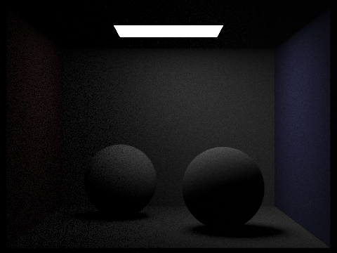 |
Phase Functions
We implemented different phase functions to sample from to see how changing the distribution of scattered rays would affect our final result. We researched and implemented all the phase functions from this paper.
For isotropic scattering, we sample directions uniformly over the hemisphere. The phase function will be \(\frac{1}{4\pi}\). To get a random sample, we use our UniformHemisphereSampler.
For anisotropic scattering, we implement different phase functions.
The Henyey-Greenstein phase function models directional bias in scattering. The function depends on a parameter g which represents a bias in forward scattering or backward scattering. We follow the textbook and define the phase function to be: \(\frac{1 - g^2}{4\pi(1 + g^2 - 2gcos\theta)^{1.5}}\). To sample for a direction based on this phase function, we first need to sample a cosine and phi value. We uniformly sample for phi and use this formula to find the cosine from the textbook: \(cos\theta = -\frac{1}{2g}(1 + g^2 - (\frac{1 - g^2}{1 + 2g -2g\xi})^2)\). Now, we compute the direction from both angles. If g = 0, this means we have no bias and will result in isotropic scattering. If g > 0, the function favors forward scattering and if g < 0, the function favors backward scattering.
The Schlick phase function is a computationally efficient heuristic approximation of the Heyney-Greenstein function. The phase function is given by: \(p(x, \theta) = \frac{1 - k^2}{4\pi(1 + kcos\theta)}\) where k is a tunable parameter similar to the g parameter in Heynet-Greenstein. We use the rule of thumb \(k \approx 1.55 g - 0.55 g^3\) to choose our value of k.
The Rayleigh Scattering phase function is used for scattering light off of air molecules that are up to 1/10th of the wavelength size. The phase function is given by: \(\frac{3}{16\pi}(1 + cos^2\theta)\). The scattering coefficient is dependent on the wavelength, diameter, and the refractive index of the particle. This can be found using this function: \(\sigma_s = \frac{2\pi^5}{3} \frac{d^6}{\lambda^4} (\frac{n^2 - 1}{n^2 + 2})^2\)
Below are comparisons of the different phase functions with 3 bounces of light:
|
|
|
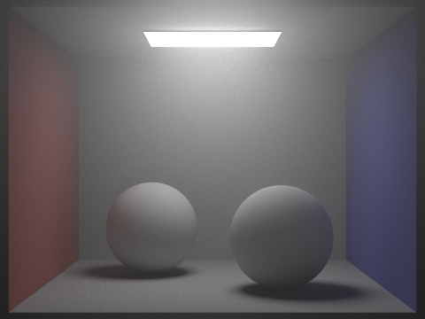
|
From the three images, you can see that the scattering for the isotropic function is uniform across the entire medium. For a bias in forward scattering, there is more light that is scattered from the direction of the light source to the camera. For backward scattering, there is a lot less light since it is more likely for the ray to go away from the camera.
Below are comparisons of anisotropic phase functions with 3 bounces of light:
|
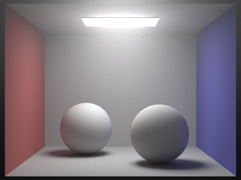
|
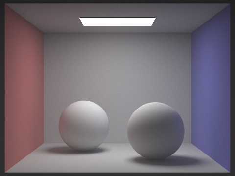
|
Problems Encountered
- Throughout this project, we encountered a variety of bugs ranging in difficulty. There were multiple cases where small errors, such as being off by an epsilon value, had a significant visual impact. We would see patterned lines across the box or have the scene be brighter than what we wanted. Additionally, we encountered dark shading in certain areas because we did not handle some edge cases in our implementation. It was interesting to see how these minor one-off errors could affect our final render!
- Additionally, conceptual misunderstanding of sampling methods for random walks and sampling phase function distributions caused consistent, systematic bias in our estimates, which resulted in consistent visual errors until we double-checked our math and fixed our function implementations.
- A more challenging issue we encountered was during our implementation for delta tracking. To first test that our implementation worked, we set our extinction coefficient to be zero, which should output the same result as a homogeneous medium. We attempted different implementations of delta tracking. We used a spatial grid holding the density of particles at a specific pocket in space to simulate the heterogeneous nature of volumetric scattering and also used a simpler approach of having a function that generates the scattering and absorption coefficient with position.
- In terms of working with Schlick scattering, we needed to be very careful with the calculations for the inverse CDF based on the probabilistic function that was provided to us. Using a slightly miscalculated function caused our picture to be rendered entirely incorrectly.
Lessons Learned
- The main lesson we learned from this project was how volumetric scattering can be incorporated to transform a vacuum-like medium into one filled with particles that represent dust or gas. It was interesting to explore the different techniques that simulate this behavior and compare the outputs of each method.
- Another lesson we learned was the importance of precision in rendering. Throughout the project, we encountered many experiences where a minor error led to significant artifacts in our final output, and heavily relied on unit testing and ablations to pinpoint problem areas in our code.
- Lastly, we learned how to work as a team. This project was challenging to divide because many components relied on each other but we learned how to collaborate effectively to produce our final project.
Results
a cool image!
|
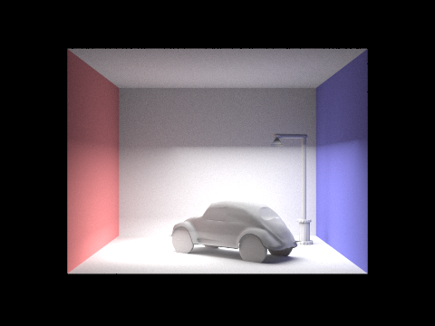
|
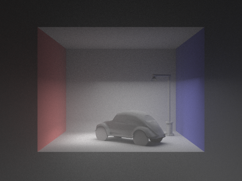
|
|
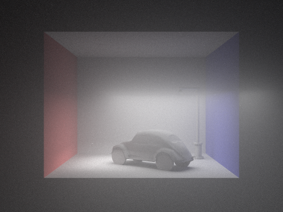
|
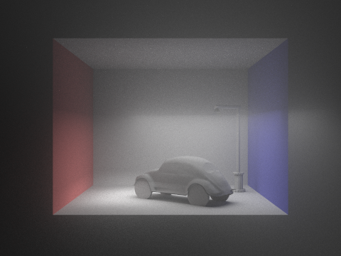
|
References
https://cs.dartmouth.edu/~wjarosz/publications/dissertation/chapter4.pdf
http://luthuli.cs.uiuc.edu/~daf/courses/rendering/papers/lafortune96rendering.pdf
Contributions from each team member
We all read research papers on our topic and contributed to the implementation of our project. Shaurya mainly worked on delta tracking and computed the math formulas for the extinction coefficients in a heterogeneous medium. Carolyn focused on the base implementation and debugged the code to fix minor errors in the images. She also created the dae files and completed the deliverables. Lance implemented inverse transform sampling for homogeneous mediums and worked with Shaurya on delta tracking and two of the phase function implementations. Eric worked on the base implementation as well and created the two phase functions. He also helped debug the main implementation and delta tracking.